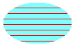

A hatch pattern is made from two colors: one for the background and one for the lines that form the pattern over the background. To fill a closed shape with a hatch pattern, use a HatchBrush object. The following example demonstrates how to fill an ellipse with a hatch pattern:
HatchBrush hBrush(HatchStyleHorizontal, Color(255, 255, 0, 0),
Color(255, 128, 255, 255));
stat = graphics.FillEllipse(&hBrush, 0, 0, 100, 60);
The following illustration shows the filled ellipse.

The HatchBrush constructor takes three arguments: the hatch style, the color of the hatch line, and the color of the background. The hatch style argument can be any element of the HatchStyle enumeration. There are more than fifty elements in the HatchStyle enumeration; a few of those elements are shown in the following list:
Â
Â